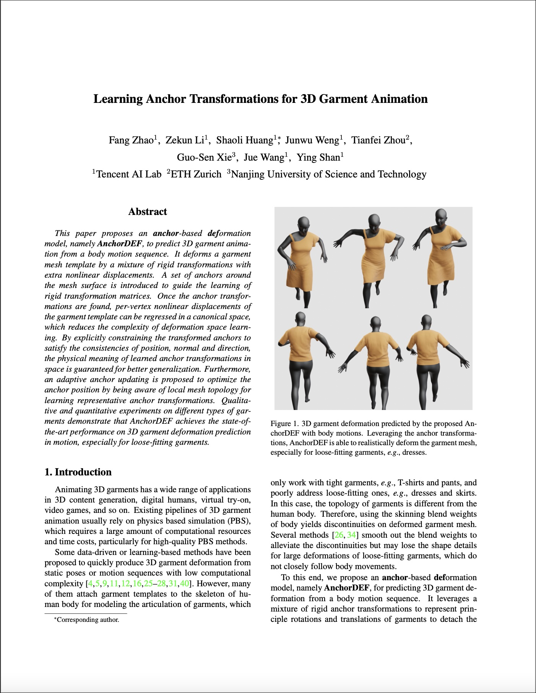

This paper proposes an anchor-based deformation model, namely AnchorDEF, to predict 3D garment animation from a body motion sequence. It deforms a garment mesh template by a mixture of rigid transformations with extra nonlinear displacements. A set of anchors around the mesh surface is introduced to guide the learning of rigid transformation matrices. Once the anchor transformations are found, per-vertex nonlinear displacements of the garment template can be regressed in a canonical space, which reduces the complexity of deformation space learning. By explicitly constraining the transformed anchors to satisfy the consistencies of position, normal and direction, the physical meaning of learned anchor transformations in space is guaranteed for better generalization. Furthermore, an adaptive anchor updating is proposed to optimize the anchor position by being aware of local mesh topology for learning representative anchor transformations. Qualitative and quantitative experiments on different types of garments demonstrate that AnchorDEF achieves the state-of-the-art performance on 3D garment deformation prediction in motion, especially for loose-fitting garments.
|
|
| Overview of the proposed AnchorDEF. Given a body motion sequence and a garment mesh template, the garment deformation is predicted by a weighted average of rigid anchor transformations with per-vertex displacements in a canonical space. We explicitly constrain the transformed anchors to satisfy the consistencies of position, normal and direction to guarantee the physical meaning of learned anchor transformations in space for better generalization. Starting from the cluster centers of mesh vertices, the anchor position is updated by a local attention map on adjacent mesh vertices with mesh simplification as supervision. |
|  | Fang Zhao, Zekun Li, Shaoli Huang*, Junwu Weng, Tianfei Zhou, Guo-Sen Xie, Jue Wang, Ying Shan Learning Anchor Transformations for 3D Garment Animation In Conference on Computer Vision and Pattern Recognition (CVPR), 2023. |
@inproceedings{zhao2023learning,
title = {Learning Anchor Transformations for 3D Garment Animation},
author = {Fang Zhao, Zekun Li, Shaoli Huang, Junwu Weng, Tianfei Zhou, Guo-Sen Xie, Jue Wang, Ying Shan.},
booktitle = {Proceedings of the IEEE/CVF Conference on Computer Vision and Pattern Recognition (CVPR)},
month = {June},
year = {2023}
}